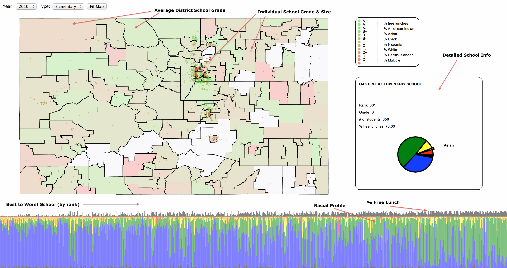

I decided to join my first Kaggle competition: https://www.kaggle.com/c/visualize-the-state-of-education-in-colorado
It's a visualization challenge, not machine learning, but both are topics close to my heart. I tackled the problem with the question 'What would I want to know if I were in charge of Colorado public schools?' in the back of my mind. I'm undoubtedly biased, but the key things I like to see are:
- A way of visualizing the data that is intuitive to understand: fancy graphs are not useful to me if I need to spend a lot of time interpreting them.
- A way of interacting with the data: static charts are never enough for me, I want to be able to explore the data, and draw my own conclusions.
- At least one significant conclusion made obvious: I like to be able to explore the data on my own, but don't make me go digging around in the dark. Use some precomputation / analysis to figure out what is something interesting to look at, then give me that, and more.
For those who don't know, Colorado now makes it's public school data public, and the competition is about encouraging (data) people to make use of it. In particular, the questions posed were:
- How have grades changed over time across the state (or perhaps more importantly how have they remained the same)?
- Where are the A schools primarily located? Our vision is that all kids have access to a high-performing school – how does the Colorado deliver against that promise of equity?
- Are there correlations between A schools and student demographics (free/reduced lunch is a proxy for poverty or by race) – Do poor and minority kids have access to A schools?
- Academic growth is an indicator used in the grading system. It is described in more detail in the data description page and on the Colorado School Grades website, but is perhaps the greatest indicator of how much teaching and learning is actually occurring in the school. That said, where are the schools that have the best sub-grades for student growth? Are there particular schools that have high percentages of low income students AND high grades for student growth. Some may say those schools are doing more to close Colorado’s achievement gap between the wealthy and the poor than any other.
- What percentage of Colorado’s student’s are ready for college and career by school or by school district?
- Which districts have the most A schools, F schools, or improving schools?
- Which schools have improved their letter grades the most?
- How do these grades, graduation rates, and college/career readiness metrics compare to labor market and economic data / needs?
- What have we missed? Please use your creativity to identify interesting trends or insights that the data tells us.
So, here is my attempt at answering (some) of these questions.
There's a lot going on, so I'll walk through the annotated image below. For the record, the visualization performs best under Google Chrome, was developed with Apple Safari (it's surprising how much better Chrome performs nowadays), but should also work with Mozilla Firefox (other browsers may / should work, but I haven't tested).
The districts on the map are colored according to the grade legend (to the right of the map). Pure green corresponds to an average school grade of A+, pure red corresponds to an F. The average is the average grade per student (i.e. school grades are normalized by their student population).
Note
The district boundaries were obtained from the census data, so the schools were matched to district by name. This does not provide a perfect correspondence with the sometimes messy school grades data (but quite close).
You can click on a district to zoom in on it. To zoom back out click the Fit Map button at the top of the visualization tool.
The circles on the map represent individual schools, and the color of each circle corresponds to the overall school grade (using the same scale as for the districts). The radius of the circle is proportional to its population size. Each school is also linked to a vertical bar in the bottom graph (more about this later).
You can click on a school to obtain the detailed information about it (see below).
The detailed school info shows the school's rank, grade, size, percent of students receiving free lunches, and its racial distribution as a pie chart.
In the graph at the bottom, each vertical line represents an individual school (from the subset of schools selected at the very top). The vertical lines are sorted by the rank of the schools which they represent. The upper portion of the vertical line (black part) represents the percent of students receiving free lunch in that school. The lower portion of the vertical line (rainbow part) represents the normalized racial distribution of the school.
It is clear from this graph that there is a correlation between the rank of the school, the number of students receiving free lunches, and the school's racial makeup. In general, the better ranked schools have fewer students receiving free lunches, and a higher percentage of white and asian students. Conversely, the worse ranked schools have more students receiving free lunches, and a higher percentage of hispanic students. I can't offer any insight as to why this might be happening, but it certainly points to an interesting direction for Colorado to explore.